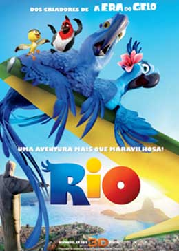
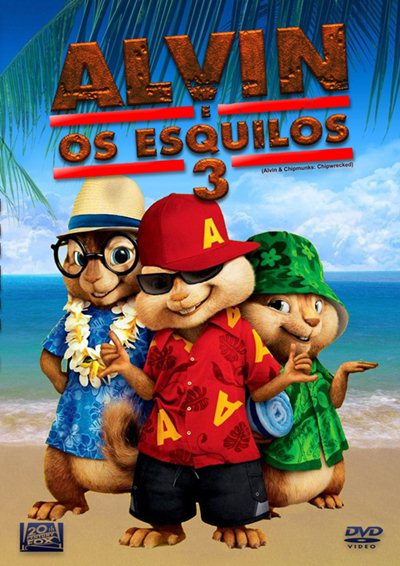
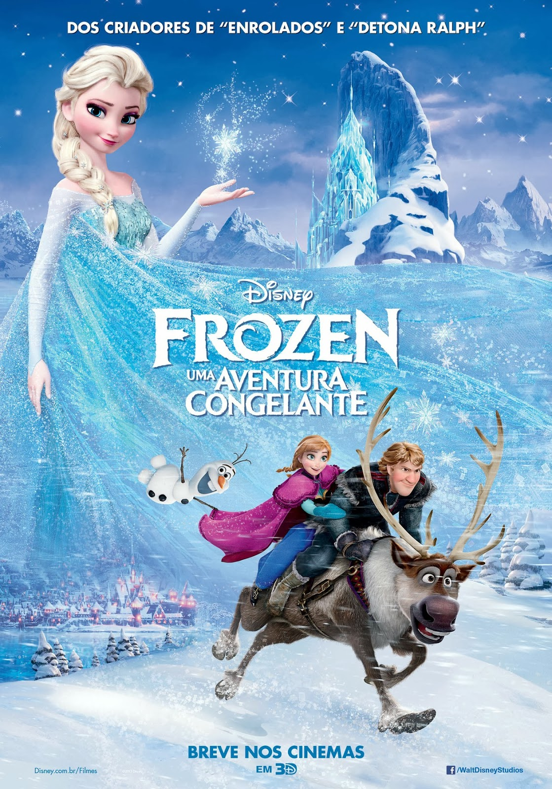
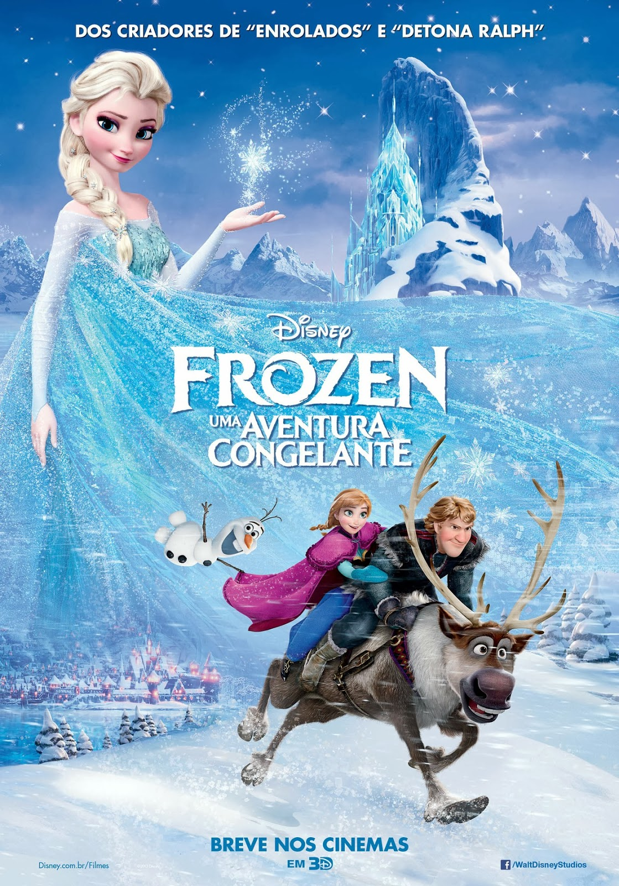

2011-2015
Filmes que marcaram a época :
- Rio, lançado no dia 08/04/2011, dirigido por Carlos Saldanha.
- Alvin e os Esquilos 3, lançado no dia 06/01/2012, dirigido por Mike Mitchell.
- Detona Ralph, lançado no dia 04/01/2013, dirigido por Rich Moore.
- Frozen: Uma Aventura Congelante, lançado no dia 03/01/2014, dirigido por Chris Buck, Jennifer Lee.
- Os Pinguins de Madagascar, lançado no dia 15/01/2015, dirigido por Simon J. Smith.


 


Músicas de sucesso na época:
2011:
- Pra você (Ao vivo)-Paula Fernandes
- Água de oceano-Victor & Léo
- Amar não é pecado-Luan Santana
- Não precisa (Ao vivo) -Paula Fernandes part. Victor & Léo
- Mentes tão bem-Zezé di Camargo & Luciano
- Um beijo (Ao vivo)-Luan Santana
- Balada (Ao vivo)-Gusttavo Lima
- Quem é (Ao vivo)-Eduardo Costa
2012:
- Humilde residência (Ao vivo) Michel Telo
- Camaro amarelo (Ao vivo)Munhoz & Mariano
- Gatinha assanhada (Ao vivo) Gusttavo Lima
- Te vivo (Ao vivo)Luan Santana
- Já não sei mais nada Bruno & Marrone
2013:
- Vidro fumê (Ao vivo) Bruno & Marrone
- Vagalumes Pollo part. Ivo Mozart
- Te esperando Luan Santana
- Show das poderosas Anitta
- Deserto (Ao vivo) Thaeme & Thiago
- Amor de chocolate (Ao vivo) Naldo Benny
- Piradinha Gabriel Valim
- Choro Leonardo
2014:
- Domingo de manhã Marcos & Belutti
- Os 10 mandamentos do amor (Acústico) Eduardo Costa
- Cê topa? (Ao vivo) Luan Santana
- Mozão Lucas Lucco
- Caraca, muleke! Thiaguinho
- Flores em vida Zezé di Camargo & Luciano
- Guerra fria Sorriso Maroto part. Jorge & Mateus
- Fui fiel Gusttavo Lima
2015:
- Suíte 14 (Ao vivo) - Henrique & Diego part. MC Guime
- Escreve aí (Ao vivo) - Luan Santana
- Agora (Ao vivo) - Bruno & Marrone
- O defensor - Zezé di Camargo & Luciano
- Mudando de assunto (Ao vivo) - Henrique & Juliano
- Vai vendo - Lucas Lucco
- Os anjos cantam - Jorge & Mateus
- Dez minutos longe de você - Victor & Leo part. Henrique & Juliano
Os acontecimentos que marcaram os anos de 2011-2015 foram:
- A presidente Dilma Rousseff chegou ao poder em 1º de janeiro de 2011
- 13/03/2012 28 pessoas, das quais 22 crianças oriundas da Bélgica, morrem em um acidente de ônibus num túnel do cantão de Valais
- 2013 o papa emérito Bento XVI, surpreendeu o mundo católico ao anunciar sua renúncia.
- Em 2014, o estado de São Paulo passou pela pior seca já registrada nos últimos 70 anos.
- 2015 foi o ano que inventaram o "Hoverboard"